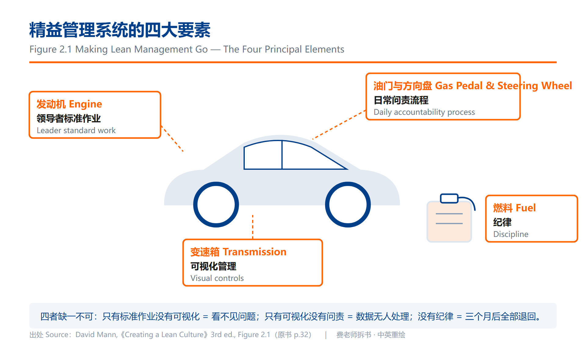
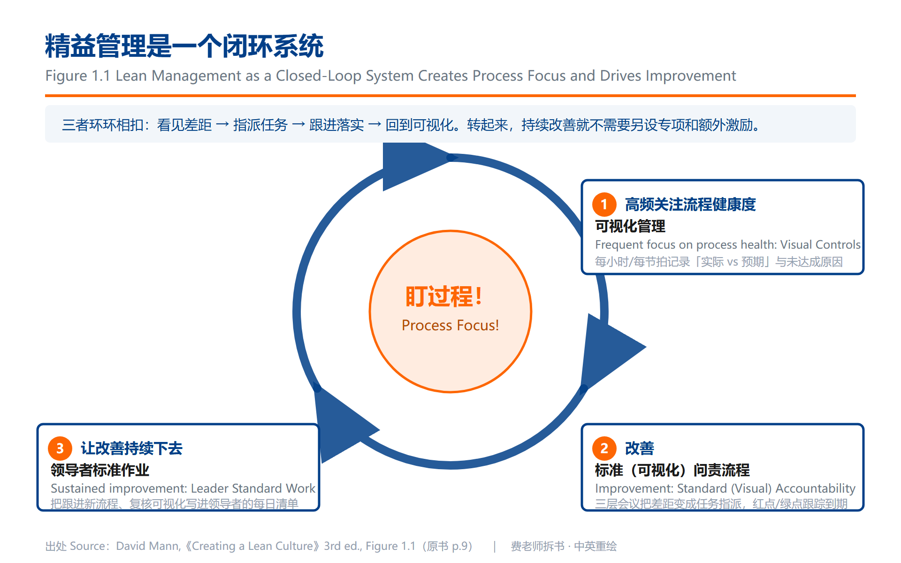
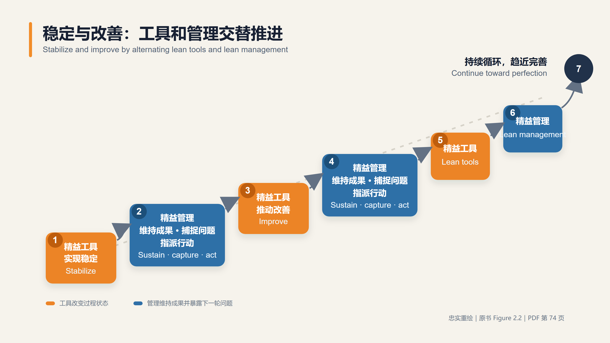
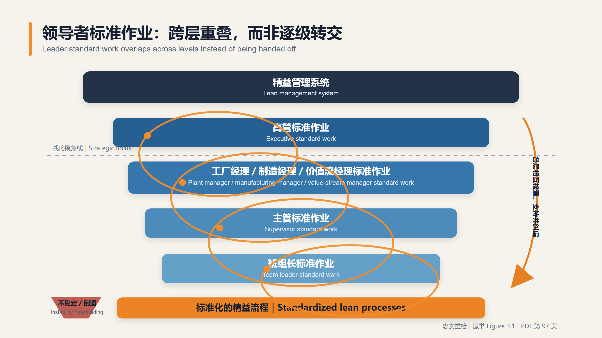

🖼 图解精益
从精益经典原著中提取、中英双语重绘的核心模型图，目前 23 张，覆盖已拆的 7 本书。每张图都能在对应的 拆书笔记 里找到讲它的段落。
原书截图仅供内部对照，对外一律用重绘版——图中每个标签都做了中英对照，可直接用于课件与内部宣讲。
《001-欢迎问题收获成功》
图01 方针管理展开图
Hoshin Management System

《001-欢迎问题收获成功》p.85（物理页 94） · 中英双语重绘：费老师
相关术语：Catchball · 指标树 · 方针管理 · 状态管理
图02 评估系统汇总雷达图
Assessment System Summary（Total / Process Assessment）

《001-欢迎问题收获成功》p.131（物理页 140） · 中英双语重绘：费老师
相关术语：PDCA循环 · 可视化管理 · 每日管理 · 领先指标与滞后指标
图04 ROA 价值树
ROA Value Tree（ROA Value Management Break-down）

《001-欢迎问题收获成功》p.173（物理页 182） · 中英双语重绘：费老师
《002-丰田参与方程式》
图01 参与方程式总模型
The Engagement Equation (GTS6 + E3 = DNA)

《002-丰田参与方程式》Intro p.6 / Ch4 · 中英双语重绘：费老师
图02 文化链
Culture Chain

《002-丰田参与方程式》书 p.36 · 中英双语重绘：费老师
图03 8步TBP对应PDCA
A3 Problem-Solving Process

《002-丰田参与方程式》书 p.86 · 中英双语重绘：费老师
图04 多层级差距分解
Addressing a Multilevel Gap

《002-丰田参与方程式》书 p.122 · 中英双语重绘：费老师
图05 读A3倒推
Reading the A3 Backward

《002-丰田参与方程式》书 p.166 · 中英双语重绘：费老师
图06 两种差距（自绘整合）
Caused Gap vs Created Gap (Ch10 整理)

《002-丰田参与方程式》书 p.190 · 中英双语重绘：费老师
《003-创建精益文化》
图01 精益管理四要素汽车隐喻
Making Lean Management Go

《003-创建精益文化》第三版 p.32（PDF 66）· Figure 2.1 · 中英双语重绘：费老师
领导者标准作业＝发动机，可视化管理＝变速箱，日常问责＝油门和方向盘，纪律＝燃料。少装一样，车不走。
相关术语：领导者标准作业 · 可视化管理 · 每日问责流程 · 素养
图02 精益管理闭环
Lean Management as a Closed-loop System

《003-创建精益文化》第三版 p.9（PDF 43）· Figure 1.1 · 中英双语重绘：费老师
可视化发现差距 → 问责指派行动 → 领导者标准作业跟进 → 回到过程聚焦。圆心两个字：盯过程。
图03 稳定与改善循环
Stabilizing and Improving: Lean Production and Lean Management

《003-创建精益文化》第三版 p.40（PDF 74）· Figure 2.2 · 中英双语重绘：费老师
精益工具把过程推到新的稳定水平，精益管理守住成果并暴露下一轮问题——两者交替向上，不是二选一。
图04 领导者标准作业跨层重叠
Overlapping Elements in Leader Standard Work Across Levels

《003-创建精益文化》第三版 p.63（PDF 97）· Figure 3.1 · 中英双语重绘：费老师
高管、经理、主管、班组长的标准作业必须彼此重叠：每层向下验证过程，向上暴露系统障碍，底部共同锚定标准化流程。
《004-日常管理：执行战略》
图01 日常管理看板的三大要素块
The Three Essential Blocks

《004-日常管理：执行战略》p.24, p.43-45 · 中英双语重绘：费老师
相关术语：日常管理
图02 援助链的时限升级机制
Chain of Help — Time-bound Escalation

《004-日常管理：执行战略》p.60-63 · 中英双语重绘：费老师
每层都标着”我有多久”，到点自动往上抬，不靠人自觉——层级不是用来审批的，是用来支援的。
《005-丰田式Dantotsu质量改善》
图01 Dantotsu 极致质量改善路径
The Dantotsu Quality Improvement Path

《005-丰田式Dantotsu质量改善》综合第 1–14 章与终章 · 中英双语重绘：费老师
跨章节教学总览，不对应原书单张 Chart——把野村贞夫零散在全书的做法串成一条可走的路径。
相关术语：断突质量 · 零缺陷 · 全质量零缺陷 · 自働化
《006-丰田持续改善之道》
图01 丰田模式 4P
Toyota Way 4P Model

《006-丰田持续改善之道》图 1.1（PDF 38） · 中英双语重绘：费老师
理念（Philosophy）→ 流程（Process）→ 人与伙伴（People）→ 解决问题（Problem Solving），全书的地基框架。
图02 PDCA 流程与人才双轨
PDCA for Process Improvement and People Development

《006-丰田持续改善之道》表 2.1、图 2.2（PDF 58、65） · 中英双语重绘：费老师
同一轮 PDCA 同时产出两样东西：改好的流程，和被练出来的人。只收其中一样，改善就留不住。
图03 真北与目标状态阶梯
True North and Target-condition Ladder

《006-丰田持续改善之道》图 4.1（PDF 101） · 中英双语重绘：费老师
真北是永远到不了的方向，目标状态是下一级台阶——不设台阶，方向就变成口号。
图04 对抗组织熵增
Counteracting Organizational Entropy

《006-丰田持续改善之道》图 5.5（PDF 119） · 中英双语重绘：费老师
不持续注入正向能量，组织自然退回原状——这解释了为什么”墙上的板子还在，人已经不看了”。
《007-创建有效管理体系》
图01 管理系统的四个维度
Three Dimensions of the Management System

《007-创建有效管理体系》Figure 1.1（PDF 35） · 中英双语重绘：费老师
目的、人员、流程三者互动产生结果——工具装在一起不转，多半是其中一维空着。
图02 TWI 与改善套路整合
TWI & Kata Integration

《007-创建有效管理体系》Figure 6.2（PDF 135） · 中英双语重绘：费老师
以改善套路识别障碍，再按稳定性、生产率、环境三类情形调用对应的 TWI 技能。
相关术语：改善套路 · 工作指导 · 工作方法 · 工作关系
图03 复杂性情境中的 TWI 与改善套路
Cynefin Framework with TWI / Kata Application

《007-创建有效管理体系》Figure 7.3（PDF 164） · 中英双语重绘：费老师
已知的工作用 TWI 稳住，复杂的问题用 Kata 做实验——先分清情境，再挑方法。
重绘图为费老师原创，可自由用于学习与内部分享，转载请注明出处与原书。